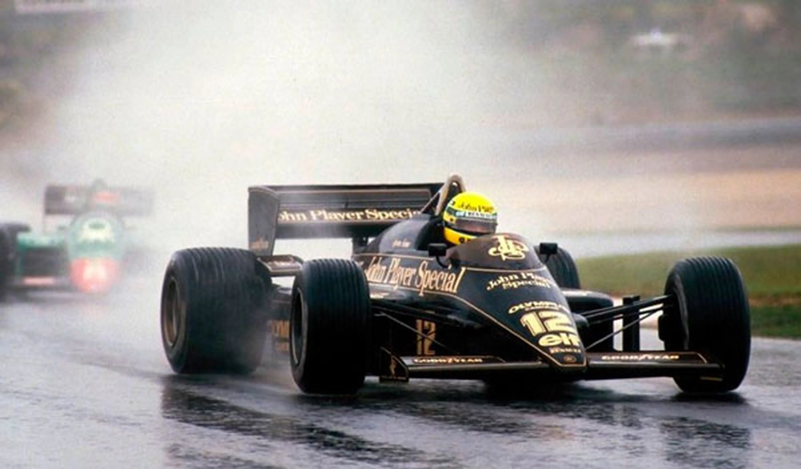

Infancia y comienzos
 Nacimiento: Ayrton Senna nació el 21 de marzo de 1960 en São Paulo, Brasil, en una familia acomodada.
Interés temprano por los motores: Desde pequeño mostró habilidades excepcionales para manejar vehículos,
comenzando con un kart que su padre le construyó.
Karting: Comenzó a competir en karting a los 13 años, y rápidamente destacó, ganando campeonatos regionales
y nacionales en Brasil.
Nacimiento: Ayrton Senna nació el 21 de marzo de 1960 en São Paulo, Brasil, en una familia acomodada.
Interés temprano por los motores: Desde pequeño mostró habilidades excepcionales para manejar vehículos,
comenzando con un kart que su padre le construyó.
Karting: Comenzó a competir en karting a los 13 años, y rápidamente destacó, ganando campeonatos regionales
y nacionales en Brasil.
Carrera profesional
 Paso a Europa: En 1981, Ayrton se mudó a Europa para competir en Fórmulas menores, ganando campeonatos como la Fórmula Ford 1600 y la Fórmula 3 Británica en 1983. Su talento llamó la atención de los equipos de Fórmula 1. Debut en la Fórmula 1: Senna debutó en 1984 con el equipo Toleman. Su rendimiento en el Gran Premio de Mónaco, bajo lluvia, lo convirtió en una revelación al quedar en segundo lugar. Éxitos con Lotus: Entre 1985 y 1987, compitió con Lotus, logrando sus primeras victorias y consolidándose como un piloto excepcional, especialmente en condiciones de lluvia.
Era dorada con McLaren (1988-1993)
 Campeonatos mundiales: Ayrton ganó tres campeonatos mundiales de Fórmula 1 con McLaren (1988, 1990 y 1991).
Rivalidad con Alain Prost: Su rivalidad con el francés Alain Prost es legendaria. Ambos protagonizaron
momentos icónicos y controvertidos, incluyendo colisiones en Japón que definieron campeonatos.
Talento bajo la lluvia: Senna ganó el apodo de "El Rey de la Lluvia" debido a su habilidad excepcional en
condiciones difíciles, como en el Gran Premio de Donington de 1993, donde realizó una de las mejores vueltas
iniciales de la historia.
Campeonatos mundiales: Ayrton ganó tres campeonatos mundiales de Fórmula 1 con McLaren (1988, 1990 y 1991).
Rivalidad con Alain Prost: Su rivalidad con el francés Alain Prost es legendaria. Ambos protagonizaron
momentos icónicos y controvertidos, incluyendo colisiones en Japón que definieron campeonatos.
Talento bajo la lluvia: Senna ganó el apodo de "El Rey de la Lluvia" debido a su habilidad excepcional en
condiciones difíciles, como en el Gran Premio de Donington de 1993, donde realizó una de las mejores vueltas
iniciales de la historia.
Último año y trágico accidente
 Williams (1994): Senna se unió a Williams en 1994. Aunque el equipo tenía un historial de dominio, esa
temporada comenzó con dificultades para Ayrton debido a cambios en las regulaciones técnicas.
Accidente en Ímola: El 1 de mayo de 1994, durante el Gran Premio de San Marino, Ayrton sufrió un accidente
fatal en la curva Tamburello del circuito de Ímola. Tenía 34 años.
Williams (1994): Senna se unió a Williams en 1994. Aunque el equipo tenía un historial de dominio, esa
temporada comenzó con dificultades para Ayrton debido a cambios en las regulaciones técnicas.
Accidente en Ímola: El 1 de mayo de 1994, durante el Gran Premio de San Marino, Ayrton sufrió un accidente
fatal en la curva Tamburello del circuito de Ímola. Tenía 34 años.
Legado
 Estilo de conducción: Senna era conocido por su intensidad, precisión y capacidad para superar los límites.
Filantropía: Ayrton apoyó a los niños desfavorecidos en Brasil, un legado que su familia continuó tras su
muerte con la creación del Instituto Ayrton Senna.
Inspiración global: Senna sigue siendo un ícono en Brasil y en todo el mundo, no solo por su talento en la
pista, sino por su carisma, espiritualidad y dedicación.
Senna dejó una huella imborrable en la historia de la Fórmula 1, siendo recordado como un piloto que vivió
intensamente, siempre buscando la perfección y la victoria.
Estilo de conducción: Senna era conocido por su intensidad, precisión y capacidad para superar los límites.
Filantropía: Ayrton apoyó a los niños desfavorecidos en Brasil, un legado que su familia continuó tras su
muerte con la creación del Instituto Ayrton Senna.
Inspiración global: Senna sigue siendo un ícono en Brasil y en todo el mundo, no solo por su talento en la
pista, sino por su carisma, espiritualidad y dedicación.
Senna dejó una huella imborrable en la historia de la Fórmula 1, siendo recordado como un piloto que vivió
intensamente, siempre buscando la perfección y la victoria.